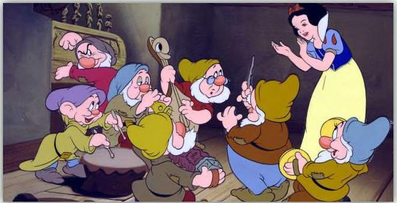

vời và đúng được giữ trong một khoảng thời gian đủ dài để cho phép danh mục đầu tư sinh lợi. Đó là tất cả những gì xảy ra”. (ác đại lý nghệ thuật lớn hoạt động giống như quỹ chỉ số. Họ đã mua mọi thứ có thể. Và họ mua nó theo danh mục đầu tư, không phải từng phần mà họ thích. Sau đó, họ ngồi và chờ đợi. Đó là tất cả những gì xảy ra. (ó lẽ 99% tác phẩm mà một người như Berggruen có được trong đời hóa ra không có giá trị gì. Nhưng điều đó không đặc biệt quan trọng nếu 1% còn lại hóa ra là tác phẩm của một người như Picasso. Berggruen có thể sai hầu hết thời gian và cuối cùng văn đúng một cách ngoạn mục. Rất nhiều thứ trong kinh doanh và đầu tư hoạt động theo cách này. Sự kiện cuối — những đầu xa nhất của sự phân bổ kết quả — có ảnh hưởng to lớn đến tài chính, nơi một số lượng nhỏ các sự kiện có thể chiếm phần lớn kết quả. Điều đó có thể khó giải quyết, ngay cả khi bạn hiểu toán học. Một nhà đầu tư có thể sai một nửa số lần mà vẫn kiếm được tiền. Nó có nghĩa là chúng ta đánh giá thấp mức độ bình thường của nhiều thứ thất bại. Điều này khiến chúng ta phản ứng thái quá. Steamboat Willie đã đưa Walt Disney lên bản đồ với tư cách là một nhà làm phim hoạt hình. Thành công trong kinh doanh là một câu chuyện khác. Hãng phim đầu tiên của Disney bị phá sản. Các bộ phim của ông ấy được sản xuất quá tốn kém và được tài trợ với mức kinh phí quá cao. Đến giữa những năm 1930, Disney đã sản xuất hơn 400 phim hoạt hình. Hầu hết chúng đều ngắn, hầu hết đều được người xem yêu thích, nhưng hầu hết đều thất bại (kinh phí sản xuất quá ca). Bạch Tuyết và bảy chú lùn đã thay đổi mọi thứ. 8 triệu đồ la công ty kiếm được trong sáu tháng đầu năm 1938 là một khoản lớn hơn bất cứ thứ gì (ông ty kiếm được trước đó. Nó đã biến đổi Disney Studios. Tất cả các khoản nợ của công ty đã được trả hết. Những nhân viên chủ chốt nhận được thưởng. (ông ty đã mua một studio hiện đại mới ở Burbank, nơi vẫn tồn tại cho đến ngày nay. Một giải 0scar đã biến Walt từ nổi tiếng thành huyền thoại. Đến năm 1938, ông đã sản xuất hàng trăm giờ phim. Nhưng về mặt kinh doanh, 83 phút của Bạch Tuyết mới là điều quan trọng. Bất cứ điều qì to lớn, sinh lợi, nổi tiếng hoặc có ảnh hưởng đều là kết quả của một sự kiện cuối — một sự kiện chỉ một trong hàng nghìn hoặc hàng triệu. Và hầu hết sự chú ý của chúng ta đổ dồn vào những thứ to lớn, có lợi nhuận,
